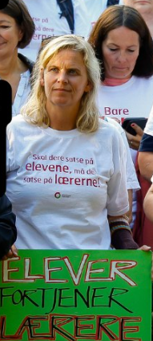

6. september 2022
Den 5. uttak
Rundt 300 nye medlemmer tas ut i streik.
Vi har kommet i kontakt med en av lærerne som gikk ut til streik
rundt denne tiden. (intervju dagen 26.09.2022) Karine
Mørck-Gåserød er lærer ved Mysen ungdomsskole og underviser i
Kunst og Håndverk, Norsk, KRLE, Samfunnsfag og Engelsk. Hun er nå
på fjerde uke av streiken. På spørsmålet om når forventer du at
streiken skal avslutte? Svarer Karine følgende.
-Jeg tror og håper at streiken tar slutt snart, fordi politikerne
gir KS mandat til å prioritere lærerne og at det legges penger på
bordet. Jeg håper og ønsker sterkt at lærerne havner under staten
igjen.
I 2004 Regjeringen har bestemt at hele forhandlingsansvaret for
lærernes lønns- og arbeidsvilkår for lærere og skoleledere skal
overføres til Kommunenes Sentralforbund (KS).
Hva føler du er grunnene til denne streik? Er det på grunn av
økonomi eller arbeidsforhold?
-Denne streiken handler framtidens skole. Det er få som søker
lærerutdanning og 50% av oss som har jobbet en stund, vurderer å
slutte.
-Lønn er et virkemiddel for å beholde og rekruttere. Dersom ikke
lærerne blir prioritert, så blir det enda større lærermangel, noe
som går utover utdanningen til elevene.
-Så da tenker jeg at svaret er både elevenes framtid og lønn.
På slutten spurte vi Karine om hva tenker hun dersom myndighetene
iverksetter tvungen lønnsnemd?
-Da tenker jeg vi har en større krise i skolen enn før streiken.
Dette vil svekke tilliten til politikerne, KS, undergrave
arbeidstakernes rettigheter og ikke minst vil dette ramme elevene
enda hardere. Noen lærere vil nok velge seg over i andre yrker,
konflikten vil være den samme om et år og enda færre vil søke seg
til lærerutdanningen. Opplæringen elevene vil få vil på ingen måte
leve opp til politikernes forventninger, ihvertfall ikke over tid,
og skolen vil bli en oppbevaringsinstitusjon i økende grad
ettersom tiden går.

(Bilde av Karine Mørck-Gåserød under streik. Foto:
Facebook siden til Utdanningsforbundet)